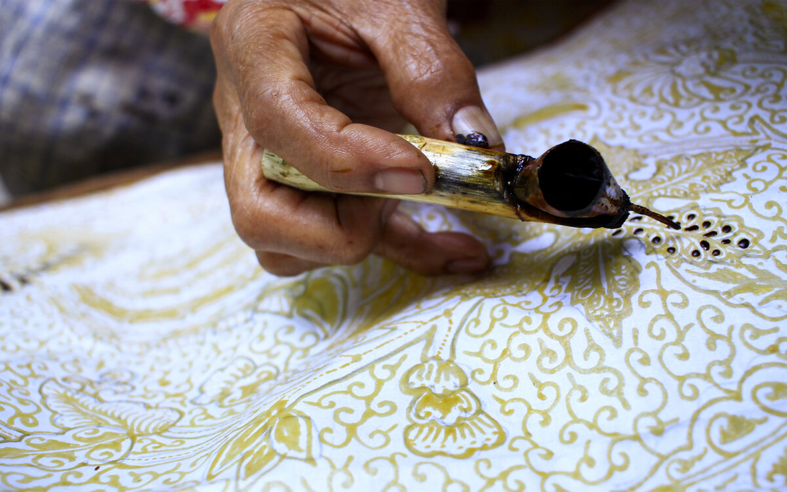
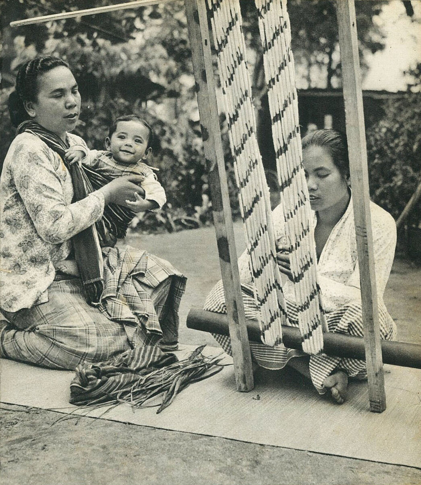
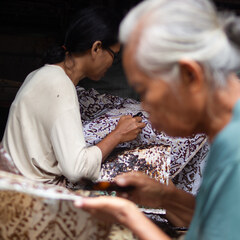
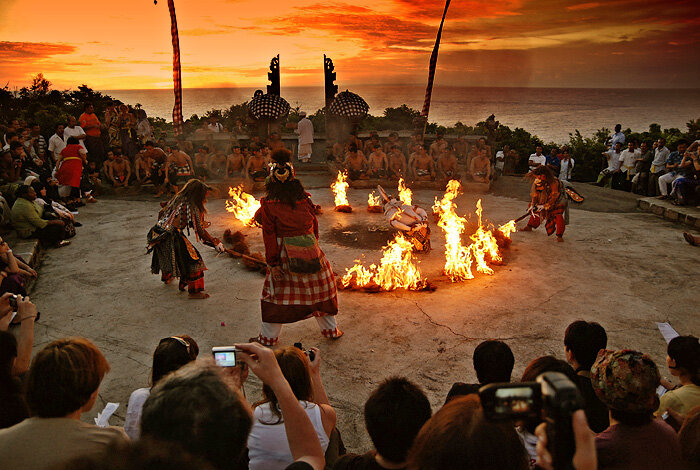
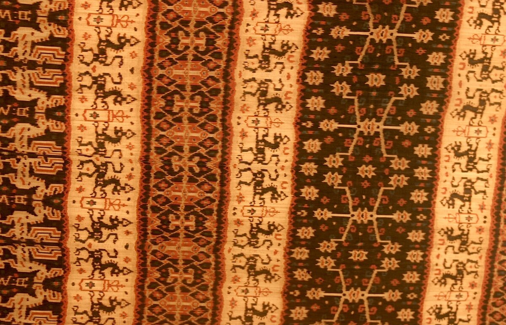
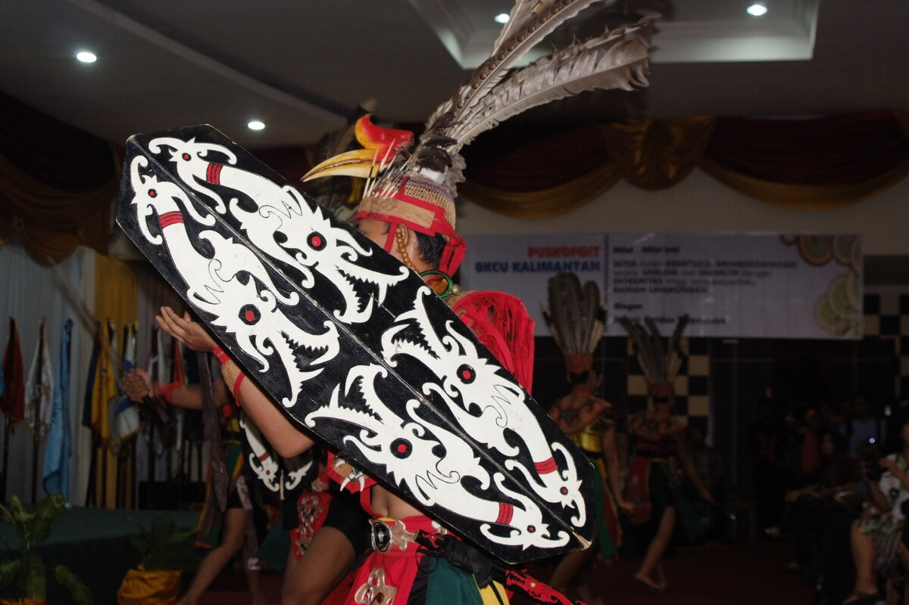
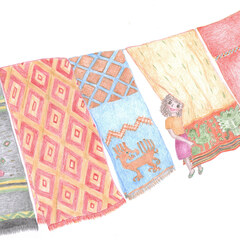
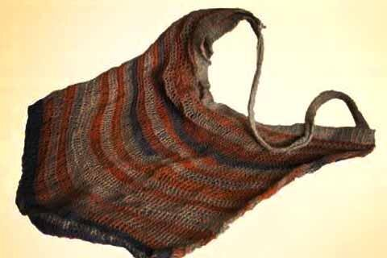
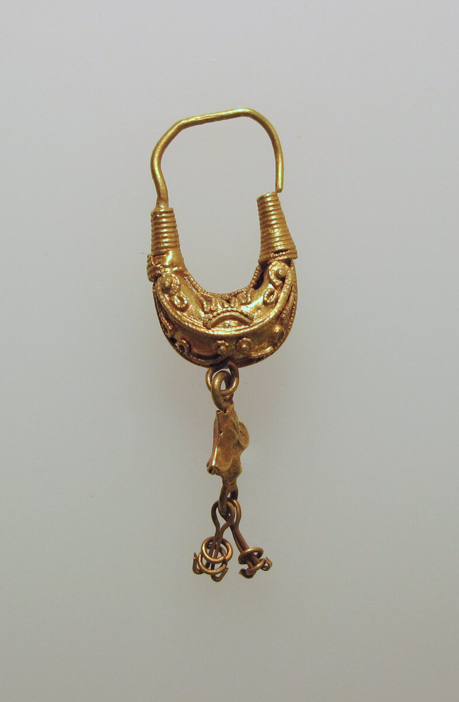

Warisan UNESCO (2009)
Ruang digital untuk merawat warisan budaya Nusantara — menghubungkan karya asli pengrajin dari Sabang sampai Merauke langsung ke tanganmu.
Pengenalan : Video Budaya Indonesia
Saksikan keindahan tradisi, tarian daerah, dan keahlian para pembuat kerajinan tangan dari berbagai penjuru Indonesia.
Pesona Budaya Kita


Nusava adalah wadah pelestarian budaya Indonesia yang dirancang khusus untuk membantu masyarakat mengenal, mencintai, serta memiliki karya asli para pengrajin daerah melalui edukasi cerita, kurasi terpercaya, dan teknologi digital yang ramah.
Memberikan cerita dan filosofi asli karya seni daerah yang akurat serta mudah dipahami.
Mendorong kebiasaan mengapresiasi dan mendukung ekonomi pengrajin lokal secara adil.
Mendukung pelestarian tradisi dengan menghargai setiap karya pengrajin lokal secara berkelanjutan.
pulau nusantara
suku bangsa asli
bahasa daerah
pengrajin terhubung
Pilih salah satu pulau untuk melihat rumah adat, pakaian tradisional, tarian, dan kerajinan tangan asli buatan warga setempat.
Pilih Cepat Daerah Pulau:
Pesan Bijak Budaya Daerah
"Menjaga keindahan bumi — kesabaran dan cinta yang diwujudkan lewat goresan malam batik dan ukiran kayu warisan leluhur."
Setiap daerah di Indonesia memiliki keunikan sendiri: dari kain batik tulis yang halus, megahnya rumah adat, hingga tarian daerah yang indah dan penuh makna.
"Budaya bukan sekadar peninggalan masa lalu, tetapi kebanggaan yang terus kita jaga untuk masa depan."
· Semangat Nusava

Tarian indah yang dibawakan puluhan penari di tebing karang menghadap laut lepas saat matahari terbenam.




Dari membatik dengan canting, menenun kain benang demi benang, hingga memahat kayu: inilah cara para pengrajin menjaga warisan budaya tetap lestari.


01
Berbagai karya seni unik, mulai dari keramik hingga ukiran, yang kaya akan nilai estetika dan kearifan lokal.
02
Beragam busana tradisional dengan motif dan corak unik menggambarkan identitas serta kekayaan budaya Indonesia.
03
Sentuhan budaya dalam setiap detail, dari perhiasan hingga aksesori khas daerah yang memiliki keindahan dan makna tersendiri.
04
Keindahan musik Nusantara yang menghasilkan harmoni unik dan menjadi bagian penting dari tradisi masyarakat Indonesia.
Pilihan kerajinan tangan terbaik buatan para pengrajin daerah. Dibuat langsung dengan tangan tanpa mesin, menggunakan bahan alami asli Indonesia.

PILIHAN UTAMA
PILIHAN UTAMATemukan belasan kerajinan tangan asli mulai dari kain tenun ikat, ukiran kayu tradisional, tas noken pedalaman, hingga perhiasan perak dari 38 provinsi di Indonesia.
Pengalaman nyata dari para pembeli, pecinta seni, dan pengrajin yang saling terhubung melalui Nusava.
"Mencari kain tenun asli dengan pewarna tumbuhan dari Sumba kini sangat mudah dan terpercaya lewat Nusava."
Peneliti Kain Tradisional
"Fitur tanya AI sangat membantu kami memesan hiasan dinding ukir Dayak langsung ke pengrajinnya di Kalimantan."
Perancang Bangunan
"Nusava membantu bengkel ukir kayu kami di Bali dikenal banyak orang tanpa mengurangi arti penting dari ukiran kami."
Ahli Ukir Kayu Bali
Jawaban lengkap dan sederhana mengenai cara memesan karya, bantuan kurasi budaya, dan keamanan pengiriman barang.
Punya pertanyaan seputar karya seni atau budaya Nusantara?
Setiap karya diperiksa langsung bersama kelompok pengrajin di daerah asalnya. Kami memastikan bahan yang digunakan alami dan teknik pembuatannya sesuai tradisi turun-temurun.
Tidak, bantuan AI Pintar ini 100% gratis! Kamu bisa bebas bertanya motif yang cocok, lama pembuatannya, hingga perkiraan harganya kapan saja.
Semua barang dikemas rapi dengan pelindung khusus dan kotak kayu berlapis busa. Kami juga menyertakan asuransi penuh sehingga barangmu aman sampai di rumah.
Ya, seluruh pembayaran diberikan langsung kepada pengrajin pembuatnya tanpa potongan biaya perantara yang merugikan mereka.
Sesuai Buku Panduan TECHTOPIA Vol. 2 (INTEGER#8) Undiksha Bab II Poin E.3.f, seluruh elemen yang digunakan pada platform Nusava berlisensi resmi terbuka (Open Source), Domain Publik (Public Domain / CC0), atau Creative Commons bebas royalti untuk tujuan edukasi dan pelestarian budaya.
Seluruh dokumentasi karya budaya (Tenun Sumba, Batik Giriloyo, Noken Papua, Talawang Dayak, Pinisi, Keramik Kasongan, dll.) bersumber dari Wikimedia Commons (CC BY-SA 3.0 / 4.0), Unsplash Community License, dan katalog publik WBTb Kemendikbudristek.
Dokumentasi sinematik lanskap alam dan kebudayaan Indonesia bersumber dari arsip video berlisensi terbuka bebas royalti (Creative Commons / Royalty-Free License) yang digunakan khusus untuk keperluan edukasi, apresiasi seni, dan pelestarian warisan budaya bangsa secara non-komersial.
Bergabunglah bersama jejaring kurasi WBTb di 38 provinsi. Akses dashboard studio, sertifikasi keaslian digital, dan asisten karya berbasis kecerdasan artifisial.